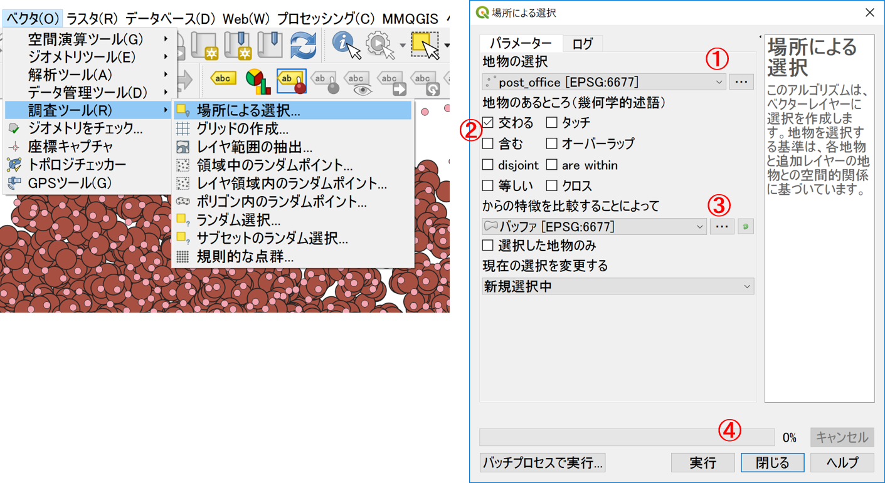
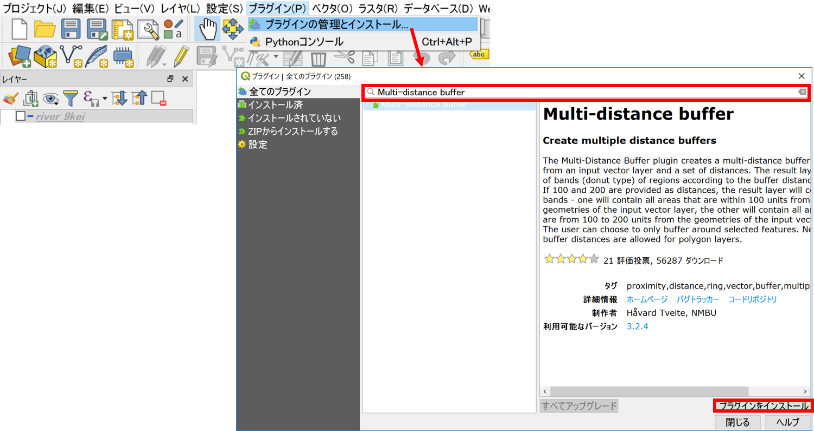
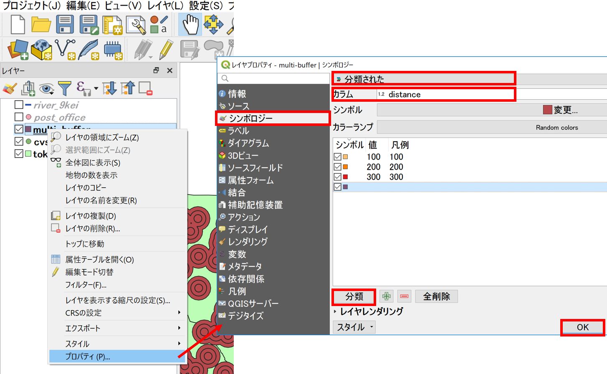

領域分析
本教材は、「領域分析」の実習用教材です。GISソフトウェア（QGIS）を用いた、バッファなどの領域分析の手法について解説しています。本実習と対応する講義用教材として、地理情報科学教育用スライド（GIScスライド）の4章が参考になります。
Menu
以下に関心がある方は、GIS実習オープン教材を参照してください。
実習用データ
実習をはじめる前に、tokyoをダウンロードしてください。
バッファ
バッファは、地物からの距離に応じて、一定の領域を作成する手法です。以下では、QGISと実習用データを利用し、ポイントデータからバッファを作成する手法や、一定の距離に区切った多重リングバッファを作成する手法について解説します。加えて、バッファで作成した領域を用いた、空間検索の手法も解説します。
点バッファの作成
以下では、バッファの例として、東京都のコンビニデータを利用し、コンビニから500mのバッファを算出し、空間検索でバッファと重なる郵便局を抽出する。まず、バッファを作成するために、ベクタ＞空間演算ツール＞バッファを選択し、以下の手順を実行する。

- コンビニのポイントデータを選択（※事前に投影座標系であることを確認しておくと良い）。
- 距離を500と設定。
- 円を近似させる線分の数10を入力する。（数が多いほどきれいな円になる）。
- 出力先と名称を指定。
- OKをクリック。
(左)各コンビニから500mのエリアが表示できた。
(右)結果を融合にチェックをいれた場合の例。

線バッファと面バッファ
同じ方法で、ラインやポリゴンからのバッファも作成できる。

空間検索を利用した抽出
以下では、空間検索を利用して、バッファと重なる地物を選択する手法について解説します。
ベクタ＞調査ツール＞場所による選択をクリックする。

- ソース地物の選択、郵便局を選択。
- 交わるをチェック。
- バッファを選択。
- 実行をクリック。
下の図のように、コンビニから500m圏内の郵便局が選択された。

多重リングバッファ
多重リングバッファを実行するため、プラグイン＞プラグインの管理とインストール からMulti-distance bufferをインストールする。
プラグインをインストールをクリックする。

ベクタ＞Multi-distance buffer＞Multi-distance bufferから以下の手順で多重リングバッファを作成する。

- コンビニを選択。
Addで距離を追加。- 出力レイヤ名を入力。
- OKをクリック。
100mごとの多重リングバッファができた。名前をつけて保存から新規レイヤとして出力する。

属性データを用いて、100mごとの色分けを行う。 
下の図のように、100mごとの多重リングバッファの表示が変更された。

この教材の[課題ページ_領域分析]へ進む
ライセンスに関する注意事項
本教材で利用しているキャプチャ画像の出典やクレジットについては、その他のライセンスについてよりご確認ください。